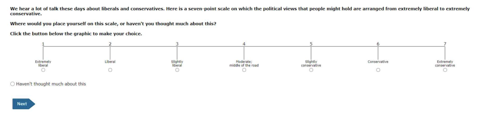
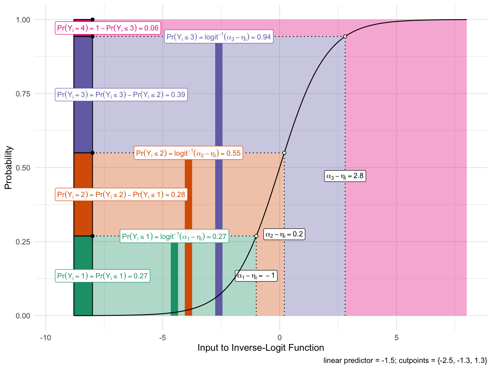
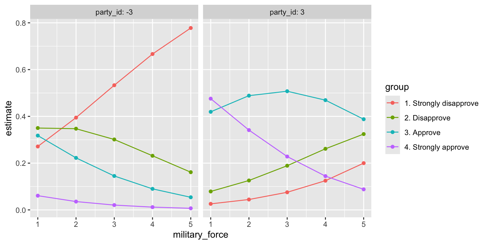
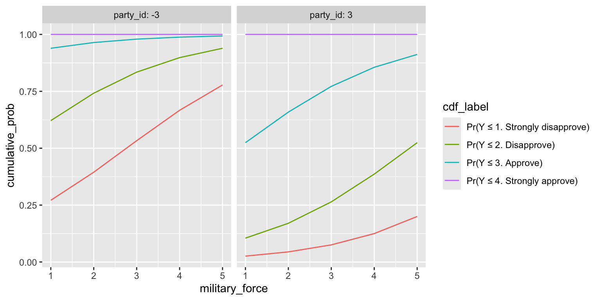
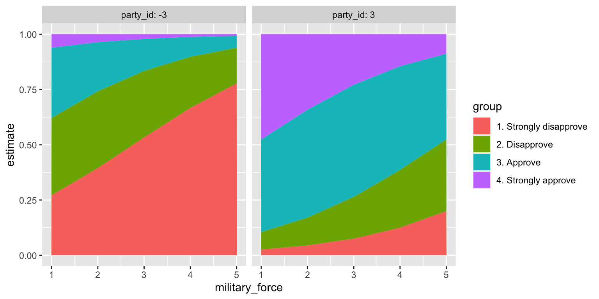

Ordered Logit
Ordered Outcomes
Suppose an ordered outcome \(y_i \in \{1, 2, \ldots, J\}\), where \(\{1, 2, \ldots, J\}\) correspond to qualitative labels that have a natural ordering.
Example 1
The ANES asks respondents to place themselves along a 7-point ideology scale with positions labeled “extremely liberal,” “liberal,” “slightly liberal,” “moderate/middle of the road,” “slightly conservative,” “conservative,” and “extremely conservative.”

We typically let 1, 2, 3, 4, 5, 6, and 7 correspond to these seven ordered labels.
Example 2
The Political Terror Scale (PTS) is a country-year measure of state repression. This measure assigns one of five qualitative labels summarizing the amount of state repression to each country-years based on reports from Amnesty International and the U.S. State Department.
| Numeric Coding | Qualitative Label |
|---|---|
| 1 | Countries under a secure rule of law, people are not imprisoned for their views, and torture is rare or exceptional. Political murders are extremely rare. |
| 2 | There is a limited amount of imprisonment for nonviolent political activity. However, few persons are affected, torture and beatings are exceptional. Political murder is rare. |
| 3 | There is extensive political imprisonment, or a recent history of such imprisonment. Execution or other political murders and brutality may be common. Unlimited detention, with or without a trial, for political views is accepted. |
| 4 | Civil and political rights violations have expanded to large numbers of the population. Murders, disappearances, and torture are a common part of life. In spite of its generality, on this level terror affects those who interest themselves in politics or ideas. |
| 5 | Terror has expanded to the whole population. The leaders of these societies place no limits on the means or thoroughness with which they pursue personal or ideological goals. |
Ordered Logit
- Let linear predictor \(\eta_i\) be our usual linear predictor so that \(\eta_i = X_i \beta\), except without an intercept \(\beta_0\).
- Now define \(J-1\) “cutpoints” \(\alpha_1 < \alpha_2 < \cdots < \alpha_{J-1}\) that act as a separate intercept for each category.
- The ordered logit defines the the cumulative probabilities as
\[ \Pr(Y_i \leq j) = \text{logit}^{-1}(\alpha_j - \eta_i), \qquad j = 1, \ldots, J-1. \]
Then probabilities for each category are
\[ \begin{align} \Pr(Y_i = 1) &= \text{logit}^{-1}(\alpha_1 - \eta_i) \\ \Pr(Y_i = 2) &= \text{logit}^{-1}(\alpha_2 - \eta_i) - \text{logit}^{-1}(\alpha_{1} - \eta_i) \\ \Pr(Y_i = 3) &= \text{logit}^{-1}(\alpha_3 - \eta_i) - \text{logit}^{-1}(\alpha_{2} - \eta_i) \\ &\vdots\\ \Pr(Y_i = j) &= \overbrace{\text{logit}^{-1}(\alpha_j - \eta_i)}^{\Pr(Y_i \leq j)} - \overbrace{\text{logit}^{-1}(\alpha_{j-1} - \eta_i)}^{\Pr(Y_i \leq j-1)}, \qquad j = 2, \ldots, J-1 \\ &\vdots\\ \Pr(Y_i = J) &= 1 - \text{logit}^{-1}(\alpha_{J-1} - \eta_i). \end{align} \]
Illustrative Figure
The figure on the next slide shows this graphically for an outcome with four possible values.
- I set the three cutpoints to \(\alpha = (-2.5,-1.3,1.3)\).
- I set the linear predictor for an example observation to \(\eta_i = -1.5\).

Example: Approval of President Bush, 1992
The data
- Data: 1992 ANES Time Series Study (Miller et al. 2016).
- Outcome: approval of President Bush’s job performance, four categories: strongly disapprove, disapprove, approve, and strongly approve.
- Predictors:
military_force: how willing the United States should be to use military force to solve international problems, from 1 (extremely willing) to 5 (never willing).ideology_distance: distance between the respondent’s ideology and where they place Bush, from 0 (same position) to 6 (opposite ends of the 7-point scale).economy: evaluation of the national economy compared with a year ago, from 1 (much better) to 5 (much worse).party_id: party identification, from −3 (strong Democrat) through 0 (independent) to 3 (strong Republican).education: years of education.
- 750 respondents; 558 complete on these variables.
bush-approval-1992.csv
First, load the data set with the approval ratings (bush_approval) and the five predictors.
Rows: 750
Columns: 10
$ bush_approval <chr> "4. Strongly approve", "4. Strongly approve", "3. Ap…
$ military_force <dbl> 3, 2, 3, 1, 3, 3, 3, 2, 3, 1, 4, 4, 2, 2, 3, 1, 3, 2…
$ ideology_distance <dbl> 3, 0, 1, 1, NA, NA, NA, 1, 1, 1, 2, NA, 0, 1, NA, 1,…
$ economy <dbl> 4, 4, 3, 3, 5, 5, 4, 2, 4, 3, 5, 5, 4, 4, 4, 5, 5, 4…
$ party_id <dbl> 2, 3, 3, 3, -2, -3, 2, 3, 2, 1, -3, -2, -2, 3, -3, 2…
$ education <dbl> 17, 8, 16, 11, 13, 12, 16, 17, 13, 17, 11, 8, 12, 16…
$ ideology <dbl> 3, 6, 6, 6, NA, 4, 6, 7, 6, 7, 2, 5, 3, 5, NA, 5, NA…
$ gulf_war <dbl> 1, 1, 1, 0, 0, 0, 0, 1, 1, 1, 0, 0, 0, 1, 1, 1, 0, 1…
$ nonwhite <dbl> 0, 0, 0, 1, 0, 1, 0, 0, 0, 0, 1, 0, 0, 0, 0, 0, 0, 0…
$ vote_1992 <chr> "Bush", "Bush", "Bush", "Clinton", "Clinton", "Clint…Notice that the ordinal approval labels have a numerical prefix as part of the character string. This is helpful to (1) quickly remind us of the order and (2) ensure that the alphabetic order and ordinal rankings of their values are the same.
Because the dataset is in .csv format, bush_approval is loaded as a character string, but we can easily convert it to an ordered factor.
# convert the outcome to an ordered factor
approval <- approval |>
mutate(bush_approval = factor(bush_approval, ordered = TRUE)) |>
glimpse()Rows: 750
Columns: 10
$ bush_approval <ord> 4. Strongly approve, 4. Strongly approve, 3. Approve…
$ military_force <dbl> 3, 2, 3, 1, 3, 3, 3, 2, 3, 1, 4, 4, 2, 2, 3, 1, 3, 2…
$ ideology_distance <dbl> 3, 0, 1, 1, NA, NA, NA, 1, 1, 1, 2, NA, 0, 1, NA, 1,…
$ economy <dbl> 4, 4, 3, 3, 5, 5, 4, 2, 4, 3, 5, 5, 4, 4, 4, 5, 5, 4…
$ party_id <dbl> 2, 3, 3, 3, -2, -3, 2, 3, 2, 1, -3, -2, -2, 3, -3, 2…
$ education <dbl> 17, 8, 16, 11, 13, 12, 16, 17, 13, 17, 11, 8, 12, 16…
$ ideology <dbl> 3, 6, 6, 6, NA, 4, 6, 7, 6, 7, 2, 5, 3, 5, NA, 5, NA…
$ gulf_war <dbl> 1, 1, 1, 0, 0, 0, 0, 1, 1, 1, 0, 0, 0, 1, 1, 1, 0, 1…
$ nonwhite <dbl> 0, 0, 0, 1, 0, 1, 0, 0, 0, 0, 1, 0, 0, 0, 0, 0, 0, 0…
$ vote_1992 <chr> "Bush", "Bush", "Bush", "Clinton", "Clinton", "Clint…[1] "1. Strongly disapprove" "2. Disapprove" "3. Approve"
[4] "4. Strongly approve" Because of the numbers in the prefix, the default alphabetical ordering is exactly the ordering we want.
# fit ordered logit model
library(MASS) # be wary of conflicts with filter() and select()
fit <- polr(bush_approval ~ military_force + ideology_distance + economy + party_id + education,
data = approval, Hess = TRUE)
# summarize fit
summary(fit)Call:
polr(formula = bush_approval ~ military_force + ideology_distance +
economy + party_id + education, data = approval, Hess = TRUE)
Coefficients:
Value Std. Error t value
military_force -0.56048 0.10861 -5.160
ideology_distance -0.36441 0.06611 -5.512
economy -0.59655 0.09957 -5.991
party_id 0.43999 0.05214 8.438
education -0.07244 0.03710 -1.953
Intercepts:
Value Std. Error t value
1. Strongly disapprove|2. Disapprove -6.9981 0.7509 -9.3198
2. Disapprove|3. Approve -5.5145 0.7286 -7.5684
3. Approve|4. Strongly approve -3.2725 0.7031 -4.6544
Residual Deviance: 1175.889
AIC: 1191.889
(192 observations deleted due to missingness)Interpreting the coefficients
- Positive
party_idcoefficient means that higher categories are more likely, so Republicans are more approving. - Negative coefficients indicate who is more disapproving:
- respondents who are more opposed to military force
- respondents who are ideologically further from Bush
- respondents who perceive the economy as worse.
Probabilities with {marginaleffects}
To interpret the coefficients, we can compute the probability of falling into each category as military_force varies from 1 to 5, for strong Democrats (party_id = -3) and strong Republicans (party_id = 3). The other predictors sit at their means (the datagrid() default).
# use {marginaleffects}
library(marginaleffects)
p <- predictions(fit,
newdata = datagrid(military_force = 1:5,
party_id = c(-3, 3))) |>
glimpse()Rows: 40
Columns: 15
$ rowid <int> 1, 2, 3, 4, 5, 6, 7, 8, 9, 10, 1, 2, 3, 4, 5, 6, 7, …
$ group <fct> 1. Strongly disapprove, 1. Strongly disapprove, 1. S…
$ estimate <dbl> 0.27122253, 0.02587275, 0.39461553, 0.04445201, 0.53…
$ std.error <dbl> 0.058140543, 0.007652858, 0.052186323, 0.010035746, …
$ statistic <dbl> 4.664947, 3.380796, 7.561666, 4.429368, 11.877471, 5…
$ p.value <dbl> 3.086971e-06, 7.227631e-04, 3.979397e-14, 9.450975e-…
$ s.value <dbl> 18.30538, 10.43419, 44.51444, 16.69111, 105.66956, 2…
$ conf.low <dbl> 0.15726916, 0.01087342, 0.29233222, 0.02478231, 0.44…
$ conf.high <dbl> 0.38517590, 0.04087207, 0.49689884, 0.06412171, 0.62…
$ military_force <int> 1, 1, 2, 2, 3, 3, 4, 4, 5, 5, 1, 1, 2, 2, 3, 3, 4, 4…
$ party_id <dbl> -3, 3, -3, 3, -3, 3, -3, 3, -3, 3, -3, 3, -3, 3, -3,…
$ df <dbl> Inf, Inf, Inf, Inf, Inf, Inf, Inf, Inf, Inf, Inf, In…
$ economy <int> 4, 4, 4, 4, 4, 4, 4, 4, 4, 4, 4, 4, 4, 4, 4, 4, 4, 4…
$ education <int> 14, 14, 14, 14, 14, 14, 14, 14, 14, 14, 14, 14, 14, …
$ ideology_distance <int> 2, 2, 2, 2, 2, 2, 2, 2, 2, 2, 2, 2, 2, 2, 2, 2, 2, 2…
Computing cumulative probabilities
- However, the probabilities above are somewhat awkward to interpret.
- As some categories shrink, it isn’t immediately clear what categories are growing as a result. Instead, we can compute an easier-to-interpret cumulative probability \(\Pr(y_i \leq j)\) using
cumsum()withinarrange()ed groups.

Alternatively, position_stack(reverse = TRUE) with geom_line() or geom_area() makes ggplot() stack the probabilities for us: the line for category \(j\) sits at \(\Pr(Y_i \leq j)\), the same curves as above without computing them by hand. (The default, position = "stack", stacks the first level on top, which gives \(\Pr(Y_i \geq j)\) instead.)


Explore the fit
coef = Object.fromEntries(Object.entries(ol_coef).map(([v, b]) => [v, Number(b)]))
zeta = ol_zeta.map(Number)
vars = transpose(ol_vars) // one row per predictor
predictors = vars.map(v => v.name) // in the model's order
info = Object.fromEntries(vars.map(v => [v.name, v])) // info.party_id.min, .max, .median, .label
colors = ["#F8766D", "#7CAE00", "#00BFC4", "#C77CFF"] // ggplot2's default hues for levels 1-4
seq = (from, to) => Array.from({length: to - from + 1}, (_, i) => from + i)
wide = (form) => { form.style.setProperty("--label-width", "215px"); return form; }viewof xVar = wide(Inputs.select(predictors, {value: "military_force", label: "x-axis variable"}))
mutable facetMemory = "party_id" // the last facet choice, so it survives re-creating the input
viewof facetVar = {
const options = ["none", ...predictors.filter(v => v !== xVar)]; // never the current x
const last = mutable facetMemory; // read without a reactive dependency
const value = options.includes(last) ? last : "none"; // x took the facet's place -> none
return wide(Inputs.select(options, {value, label: "Facet variable"}));
}
rememberFacet = { mutable facetMemory = facetVar; }
// facet values: a checkbox per integer value, min and max checked by default
viewof facetVals = {
if (facetVar === "none") { // hidden placeholder whose value is an empty selection
const none = html`<span></span>`;
none.value = [];
return none;
}
const d = info[facetVar];
return wide(Inputs.checkbox(seq(d.min, d.max), {value: [d.min, d.max], label: `Facet values (${facetVar})`}));
}
mutable sliderMemory = ({}) // slider settings by variable, so they survive role changes
// fixed variables: one integer slider each, at the sample median unless set
viewof fixed = {
const fixedVars = predictors.filter(v => v !== xVar && v !== facetVar);
const last = mutable sliderMemory;
const inputs = Object.fromEntries(fixedVars.map(v => {
const d = info[v];
const value = last[v] !== undefined ? last[v] : d.median;
return [v, wide(Inputs.range([d.min, d.max], {step: 1, value, label: v}))];
}));
const template = (inputs) => html`<div>
<div style="font-weight: 600; margin: 0.75em 0 0.4em">Fixed variables</div>
${fixedVars.map(v => html`<div style="margin-bottom: 0.6em">${inputs[v]}
<div style="font-size: 0.8em; color: #777; margin-left: 215px">${info[v].label}</div></div>`)}
</div>`;
return Inputs.form(inputs, {template});
}
rememberSliders = { const last = mutable sliderMemory; mutable sliderMemory = {...last, ...fixed}; }facet = (facetVar !== "none" && facetVals.length > 0) ? facetVar : null
xs = seq(info[xVar].min, info[xVar].max)
held = Object.fromEntries(predictors.filter(v => v !== xVar && v !== facet)
.map(v => [v, fixed[v] !== undefined ? fixed[v] : info[v].median])) // a facet with nothing checked sits at its median
// ordered-logit probabilities: Pr(y <= j) = logit^-1(zeta_j - eta), differenced across the cutpoints
probs = {
const rows = [];
for (const f of (facet ? facetVals : [null])) {
for (const x of xs) {
const point = {...held, [xVar]: x};
if (facet) point[facet] = f;
const eta = predictors.reduce((sum, v) => sum + coef[v] * point[v], 0);
const cum = [0, ...zeta.map(z => 1 / (1 + Math.exp(-(z - eta)))), 1];
ol_levels.forEach((level, j) => rows.push({
x, group: level, p: cum[j + 1] - cum[j], facet: facet ? `${facet}: ${f}` : ""
}));
}
}
return rows;
}
// stacked areas; the explicit order puts level 1 at the bottom, as position_stack(reverse = TRUE) does
// (explicit width: reveal.js scales the slide, so the OJS `width` variable is not the slide's width;
// the margins make room for 18px tick labels, which Plot's 40px/30px defaults clip)
Plot.plot({
width: 1050,
height: 600,
marginLeft: 60,
marginBottom: 55,
style: {fontSize: "18px"},
x: {label: info[xVar].label, labelAnchor: "center", tickFormat: "d", ticks: xs.length <= 12 ? xs : undefined},
y: {label: "Pr(y = j)", domain: [0, 1], grid: true},
...(facet ? {fx: {label: null, domain: facetVals.map(f => `${facet}: ${f}`)}} : {}),
color: {domain: ol_levels, range: colors, legend: true},
marks: [
Plot.areaY(probs, {x: "x", y: "p", fill: "group", order: ol_levels,
...(facet ? {fx: "facet"} : {})}),
Plot.ruleY([0])
]
})The code for that plot
fmt = (x) => { // 1:5, c(-3, 3), or 2
const s = [...new Set(x)].sort((a, b) => a - b);
if (s.length === 1) return String(s[0]);
if (s.every((v, i) => i === 0 || v - s[i - 1] === 1)) return `${s[0]}:${s[s.length - 1]}`;
return `c(${s.join(", ")})`;
}
codeText = {
const args = [[xVar, xs]]; // x first, then the facet,
if (facet) args.push([facet, facetVals]); // then the fixed ones in
for (const v of predictors) if (v in held) args.push([v, [held[v]]]); // the model's order
const gridArgs = args.map(([v, vals]) => `${v} = ${fmt(vals)}`).join(",\n" + " ".repeat(36));
const plotLines = [`ggplot(p, aes(x = ${xVar}, y = estimate, fill = group)) +`,
` geom_area(position = position_stack(reverse = TRUE))`];
if (facet) {
plotLines[1] += " +";
plotLines.push(` facet_wrap(vars(${facet}), labeller = label_both)`);
}
return ["p <- predictions(fit,",
" ".repeat(17) + `newdata = datagrid(${gridArgs}))`,
"", ...plotLines].join("\n");
}
html`<pre style="font-size: 0.9em; line-height: 1.3"><code>${codeText}</code></pre>`